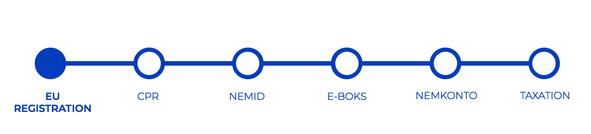
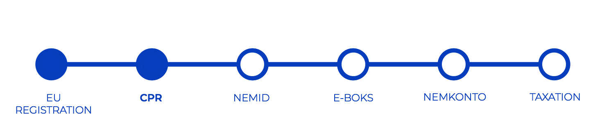
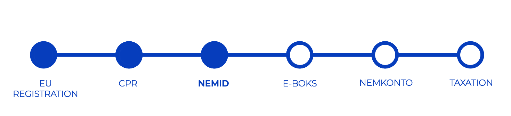
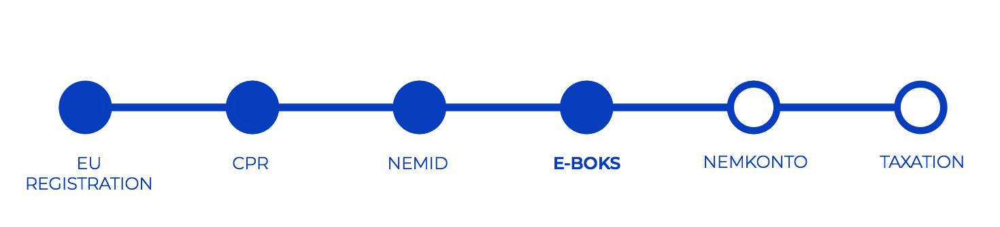

Getting started in Denmark
EU REGISTRATION CERTIFICATE
As an EU, EEA or Swiss national you are free to enter Denmark. However, if your stay in Denmark is expected to exceed three months, you must apply for a registration certificate.
Click ‘learn more’ to find more information on where and when to apply for the EU Registration Certificate
Learn More → CPR - HEALTH CARD
In Denmark each person has a personal registration number, which is called a CPR number. CPR stands for Central Person Register.
The CPR number is essential in relation to any contact with the Danish authorities and especially in connection to tax and social security issues.
Click ‘learn more’ to find more information on where and when to apply for CPR.
Learn More → NEMID - DIGITAL SIGNATURE
When you get your CPR number, you can request a NemID. NemID is a digital signature, you can use to do online official procedures (for example loging in to online banking ).
Click ‘learn more’ to find more information on where and when to apply for NemId
Learn More → E-BOKS - DIGITAL POST
Once you have your NemID, you can use Digital Post (e-boks) where you will receive e-mails from public authorities.
Click ‘learn more’ to find more information on how to use your e-boks.
Learn More → NEMKONTO - BANK ACCOUNT
You are ready to open a bank account, whenever you have a CPR number and place to live.
Card payment is accepted almost everywhere in Denmark.
Read more about opening a bank account.
Learn More →DANISH TAX AFFAIRS
Whenever you study and get SU (scholarship) or work you need to pay taxes.
Find out more about tax affairs with detailed guide prepared by SKAT (tax office)
Learn More →